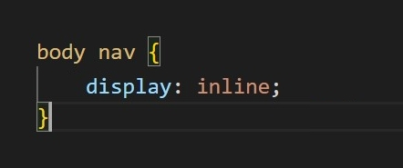
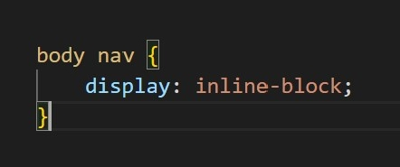
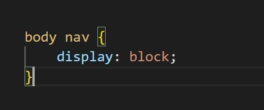

Display Types
There are many different display types when using css, but the three fundamental display types are “Inline”, “Block”, and “Inline-Block”. Each of these display types will give a different property to an element and allow you to manipulate it in a different way.
Inline:
All elements using this display type will be displayed on the same row or line as eachother. The elements grouped "Inline" will not create a new line regardless of how many different elements there are and will instead continue on the same line on the page. Another effect of using "Inline" is that the height and the width of the element is determined by the element itself and cannot be changed using any other width or height tags.
To Display an element as Inline:
Example
Test Text
Test Text
Test Text
Inline-Block:
All elements using the display of "Inline-Block" function almost the same as an "Inline" element. They will all be displayed on the same row as eachother and will continue on said line regardless of the number or type of elements being used. However, unlike "Inline" elements, these "Inline-Block" elements can have their height and width adjusted. The height and width of these elements are no longer determined by the element itself.
To Display an element as Inline-Block:
Example
Test Text
Test Text
Test Text
Block:
"Block" elements function differently to both "Inline" and "Inline-Block, rather than appearing on the same line or row, "Block" elements have the opposite effect and will always be displayed on a new line or row. Elements with the display type of "Block" can still have their height and width adjusted, but if not, they will take up the full width of the element they are in by default.
To Display an element as Block:
Example
Test Text
Test Text
Test Text